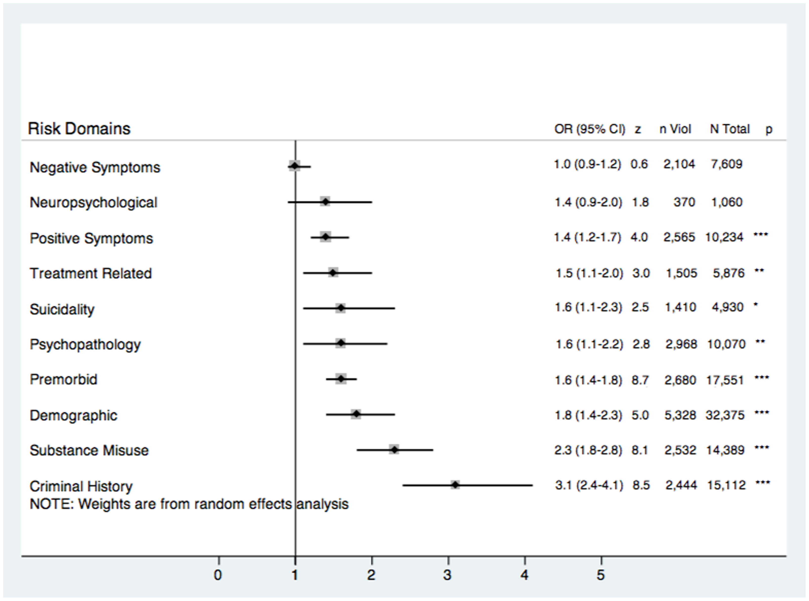

88 조현병과 폭력
88.1 조현병 환자와 폭력
일반 사회는 폭력(violence)에 대해 양가적이고 이중적인 태도를 취하고 있다. 폭력적인 영화, 게임 또는 격투기 등의 오락 산업이 번창하고 있지만, 현실에서 행해지는 폭력은 처벌의 대상이 된다.[1] 개인적 갈등을 해결할 때도 어느 정도 폭력이 필요하며, 이는 남성다움을 증명하는 길이라고 인정되지만, 애매모호한 경계를 넘으면 역시 비난과 처벌을 받는다.
그런데 조현병을 포함한 정신질환자의 폭력에 대해서는 좀더 엄격한 잣대가 적용된다. 일반인의 폭력은 이해와 예측이 어느 정도 가능하다는 면에서 좀더 허용되는 편이나, 정신질환자의 경우에는 예측불가능성 때문에 공포와 혐오의 대상이 된다.[2] 연구를 통해 정신질환자에 의한 폭력의 위험 요인과 보호 요인 등을 찾아내고자 노력하지만, 이는 환자의 안전과 자율성을 지키려는 목적보다는 사회를 보호하려는 의도가 강하다. [3] 일부 학자는 정신질환자의 폭력을 이해하고 예방함으로써 이들에 대한 사회의 편견을 줄일 수 있다고 하나, 이러한 소망은 공허한 이상에 그칠 때가 많다.[4,5]
일반인들이 “조현병”이라는 단어를 들으면 흔히 이유없는 폭력을 연상한다. 이런 인식이 정보 부족이나 선정적인 보도때문이라고 치부하는 사람도 있으나[6], 실상 인류의 역사를 쭉 훑어봐도 한번도 이러한 연상이 사라져본 적이 없다.[7,8] 정신질환에 대한 대중의 지식이 아무리 증가하여도 낙인이 사라지지 않는 이유 역시, 폭력에 대한 공포때문이다.
이와 같은 대중들의 인식에도 불구하고 조현병 환자들은 폭력의 가해자로 체포당하기보다는, 폭력의 피해자가 될 위험이 훨씬 높다.[[9]]1 더욱이 탈원화 이후 지역사회에 거주하는 환자가 많아지면서 폭력의 희생자가 되는 경우가 2배 이상 늘었다고 보고되었다.[11] 하지만 대중의 뇌리에는, 환자가 폭력의 희생자가 되었다는 사례보다는 가해자가 되었다는 사례가 더 깊게 박힌다.
1 조현병 환자가 폭력을 행사하는 경우가 피해자가 되는 경우보다 훨씬 더 강조되는데는, 언론 보도의 역할이 가장 크다. 대중의 관심을 끌어야 하는 언론매체의 속성 상, 피해자가 되는 경우는 거의 보도되지 않는다.[10] 이러한 언론매체를 통한 왜곡은 SNS 시대에 접어들면서 더욱 상황이 나빠지고 있다.
88.1.1 폭력의 정의
폭력은 시대나 장소를 막론하고 한번도 사라진 적이 없다. 그럼에도 불구하고 “폭력”의 정의조차 의견의 일치가 이뤄진 적이 없다. 폭력은 신체적일 수도 언어적일 수도 있고, 공공연할 수도 은밀할 수도 있다. 마찬가지로 개인적/집단적, 충동적/의도적일 수 있으며, 관찰자의 시점에 따라 약자의 저항으로도 강자의 억압으로 비춰지기도 한다. 또한 폭력이 미치는 충격과 후유증이 항상 그 객관적 심각도와 비례관계에 있는 것도 아니다.[12]
사회과학 분야에서는 공격성(aggression)을 “그 위해를 피하려고 하는 타인에게, 의도적으로 위해를 가하는 행동”으로 정의한다.[13] 이 개념은 1) 공격적인 의향이 중요하긴 하지만 객관적으로 관찰 가능한 행동에 국한하고, 2) 타인을 해칠 의도가 있어야 하며, 3) 타인을 직접 향하지 않았다면 유형물에 손괴를 가하여 타인에게 피해를 입혀야 하며, 4) 피해자는 이러한 위해를 피하려 해야 한다는 요소들을 담고 있다. Volavka[14]는 이러한 정의를 차용하여, “공격성”은 위해를 가하려고 의도한 공공연한 행동으로, 그 중 “폭력”은 인간에 대한 공격성으로 정의하였으나, 이에 비해 Serper[15]는 전자는 위해를 가하려는 의향으로 후자는 의도된 신체적 힘의 사용으로 정의하였다. 이렇듯 정의가 명확하지 않아 연구 결과들을 종합하는데 어려움이 있다.
88.2 역학
88.2.1 폭력과 조현병의 관계
MacArthur 폭력위험도 평가연구2에서 정신병적 장애, 기분장애, 물질사용장애 및 성격장애 환자들을 대상으로, 입원 중, 그리고 퇴원 후 10주와 20주째에 평가했을 때, 성격 및 적응장애, 물질남용 환자는 폭력 사건을 저지른 비율이 매우 높았으나, 조현병 환자들은 퇴원 후 폭력의 위험이 매우 낮았다. 이 결과는 잘 치료된 조현병 환자는 폭력의 위험이 높지 않다는 증거로 제시되어 왔지만, 결과에 대한 비판도 적지 않았다. 법무병원 또는 교도소에 있거나 노숙하는 환자는 포함되지 않았고, 조현병 환자 중 연구에 참여를 거부한 비율이 43.7%로 다른 정신질환군보다 높았다. 따라서 폭력을 불러일으키는 편집증, 적개심, 분노를 가진 환자들이 참여하지 않아 편향된 결과가 얻어졌을 가능성이 있다.
2 MacArthur Violence Risk Assessment Study (MVRAS): 1992년 MacArthur 재단의 지원을 받아 주요 정신질환을 앓고있는 환자들이 퇴원 후 지역사회 내에서 폭력 사건을 일으킬 위험이 얼마나 되는지를 조사한 연구. 미국 내 3개 센터에서 최근 급성 병동에서 퇴원한 1,136명의 정신질환자를 1년간 추적하면서, 같은 지역사회 내의 519명의 대조군과 비교하였다.[16,17] 이 결과는 환자들이 대조군에 비해 결코 더 범죄를 일으킬 비율이 높지 않다는 것을 증명하는 결과로 인용되었지만, 이후 많은 비판과 재해석이 이어졌다.[18]
치료 결과와 상관없이 조사해보면, 대다수 연구에서 정신증 환자의 폭력 위험이 일반인에 비해 49~68% 정도 높다.[4] 물론 빈도는 남자 환자에서 더 높지만, 일반 인구와의 차이는 여자 환자에서 두드러진다.[19] 스웨덴에서 코호트를 30년 동안 추적한 연구에서는 주요정신질환 환자의 범죄 행위가 남자 2.5배, 여자가 5배 많았고, 그중 폭력 범죄 행위는 각각 4.2배와 27.4배 많았다.[20] 핀란드에서 행해진 연구에서는 조현병 환자의 범죄율은 일반인의 3.1배, 폭력 범죄는 7.2배 높았고[21], 알코올 남용이 동반된 환자의 범죄율은 무려 25.2배 더 높았다.[22]
초발 환자의 폭력 성향을 보기 위해 21세 전후 환자의 폭력 행위 발생률을 조사한 연구에서는, 조현병과 알코올 의존이 함께 있을 경우 8.3배, 대마초 의존이 함께 있을 경우 18.4배 높았다.[23] 그러나 물질 사용 및 품행장애, 환경적 영향을 고려하면, 조현병 자체가 설명하는 변량은 전체 변량의 절반 미만이었다. 다만 단순한 물질 사용 환자들은 외부인에게 폭력을 행사하는 경향이 높았던 반면, 조현병 환자는 가족이나 동거인에게 폭력을 행사하는 비율이 높았다. 조현병 환자들은 세상을 위협적으로 느껴 가정에 칩거하면서, 같이 거주하는 사람들에게 투사하는 것으로 보여졌다.
그러다보니 수감자 중에 조현병 환자의 비율이 점차 높아지는 추세이다. 1989~2013년 사이에 미국 연방교도소 수감자 중 정신질환의 유병률을 조사한 연구에서 조현병 환자의 비율은 2~6.5%로 보고되었고[24], 2003~2015년 사이에 행해진 연구에서는 4% 정도로 나타났다.[25] 한번 수감된 환자들이 범죄를 다시 저지르는 위험에도 정신질환이 영향을 미치는데, 진단 불문하고 정신질환은 폭력 범죄의 재범률을 남자 1.63배, 여자 2.02배 높이며, 이는 재범 위험의 각각 20%와 40%를 설명하였다.[26]
살인죄를 저지른 범죄자 중 조현병 환자의 비율은 6~11%[27]에서 6~28%[28]정도로 집게되며, 조현병의 유병률과 비교하면 매우 높은 편이다. 단순한 폭력 사건과는 달리 살인을 다시 저지르는 경우는 2.3% 정도로 매우 낮다.[29] 아마도 우발적이고 충동적인 사례가 많았던 탓이라 여겨진다.
국가별로 비교해보면 폭력 범죄의 빈도가 높은 나라에서는 조현병 환자의 폭력 범죄율도 상승한다. 이는 사회 분위기가 폭력을 조장하는 환경에서는 조현병 환자들도 영향을 받는다는 점을 의미한다. 또한 시기에 따라 폭력을 저지른 조현병 환자에게 유죄 판결이 내려지는 비율이 다른데, 이는 정신질환자에 대한 정책이 사법체계와 의료체계 중 어느 쪽을 초점을 두는지에 따라 영향을 받기 때문인 듯 하다.[30]
결론적으로 정신병적 장애는 폭력의 중요한 위험인자이지만, 다른 위험 요인 및 교란변수의 역할이 매우 크다. 일례로 Fazel 등[31]은 교란변수를 통제하지 않으면 조현병 환자의 폭력 범죄 빈도가 일반인보다 2배 정도 높지만, 물질사용장애를 통제하면 1.2배로 낮아진다고 하였다. 미국의 National Epidemiologic Survey on Alcohol and Related Conditions에서도, 정신질환 여부만으로는 향후의 폭력을 예측할 수 없었고, 1) 과거의 폭력, 소년원 구금, 신체적 학대, 부모의 범죄 이력 등의 개인력, 2) 물질남용과 같은 병존질환, 3) 최근의 이혼, 실직, 폭력 피해 등의 주변 상황, 그리고 4) 성별, 나이, 수입 등 인구학적 요인이 훨씬 더 예측력이 높았다.[32] 요약하면, 조현병을 비롯한 심각한 정신질환이 폭력의 위험을 높이는 것은 분명하지만, 그 연관성은 생각보다 그렇게 크지 않은 것 같다.
88.2.2 탈원화와 폭력
탈원화가 국가 시책으로 자리잡히면서, 수용소에서 지역사회로 옮겨진 환자들이 결국 범죄자로 전락하지 않겠느냐는 우려가 높아졌다. 실제로 20세기 전반까지 정신질환자의 폭력 사건은 산발적으로만 발생하였으나, 1970년대에 이후에는 일상이 되었다.[33] Fazel 등[34]은 1972년부터 2010년까지의 스웨덴 자료를 분석한 후, 정신증 환자에 의한 범죄률이 입원 비율과 역비례 관계를 보였다고 하였다. 말할나위 없이 정신증 환자의 폭력은 치료 순응도가 떨어질 때 빈발하는데, 탈원화 이후 지역사회 거주 환자의 40% 정도는 치료를 받지 않는 것으로 추정되고 있다.[35] 각국은 외래치료명령제(mandatory outpatient treatment)나 외래치료지원제도(assisted outpatient treatment, AOT)를 해법으로 제시하고 있으나, 그다지 효과가 뚜렷하지는 않다.[33]
88.2.3 폭력적인 조현병 환자의 유형
흔히 편집망상이 폭력을 유발하기 때문에, 폭력적인 조현병 환자들은 모두 비슷할 것이라고 생각하지만, 동일한 망상을 지니더라도 모든 환자가 폭력을 행사하는 것은 아니다. Hodgins[30]는 이런 관점에서 폭력적인 조현병 환자들을 세 가지 유형으로 분류하였다.
Ⅰ형은 소아기나 청소년기부터 비행을 시작하여 평생 지속하는 군으로, 흔히 발병 이전에도 범죄로 처벌받은 이력이 있다. 소아/청소년기에 품행 문제가 시작된 조현병 환자들은, 똑같이 품행 문제가 있었으나 정신질환이 없는 범죄자와 비슷한 전과를 보인다.[36] 조현병 환자가 발병 전에 품행장애를 보이는 비율은 꽤 높은 편으로, 뉴질랜드 코호트 연구에서는 정신증 환자의 40% 정도가 15세 이전에 품행장애를 보였다.[37] 또한 청소년 폭력범 중에서 추후에 조현병이 발병할 위험이 4.6배 높다는 보고도 있다.[38] 따라서 품행장애나 폭력경향이 조현병과 독립적으로 폭력 위험을 높이는지, 조현병과 병태생리학적으로 연결되어있는지는 분명하지 않다. 어쨌든 분명한 것은 품행장애나 반사회적 인격, 물질남용이 일찍 시작된 조현병 환자들은 그렇지 않은 환자에 비해 훨씬 폭력 위험이 높다는 것이다.[39,40] 폭력 범죄를 저지른 조현병 환자의 40%가량이 Ⅰ형에 속하며, 이들은 실행기능과 언어 능력은 양호하나, 주의력은 낮고 충동성이 높은 것으로 알려져있다.[30]
Ⅱ형은 발병 전에는 특이점이 없다가, 발병 후에 폭력행위 시작되어 반복되는 유형으로, Ⅰ형에 비해 폭력이 시작된 나이가 늦고 전과가 적다. 물질 사용과의 연결성도 뚜렷하지 않다.[41] 이 유형은 편집 사고/망상이 직접적으로 폭력을 유발하는 것으로 예상된다. CATIE 연구에 의하면, 양성 증상은 폭력을 증가시키고, 음성 증상은 폭력을 낮추는 것으로 나타났다. 따라서 음성 증상은 적으면서, 정신병적 증상이 심한 환자들이 위험군이 되겠다.[42]
Ⅲ형은 젊었을 때는 폭력 경향을 보이지 않다가 나이가 들어서 가족에게 공격적으로 돌변하는 유형이다. 대개 자신을 돌보아주던 보호자가 공격의 대상이다. 이들 만성 조현병 환자들의 폭력 행위는 인지기능의 저하나, 감정 조절의 어려움, 기괴한 망상 등이 위험요소로 생각되며, 사회에서 격리된 자신의 처지에 대한 좌절감이 가족을 향하게 될 위험도 있다.[30,40]
88.3 폭력의 위험 인자
88.3.1 정신병적 증상
부인하고 싶지만 정신병적 증상은 조현병 환자의 폭력과 유의한 상관관계를 보인다.[그림 88.1][19,43,44], 특히 첫 삽화 때 그 연관성이 두드러지고, 치료 순응도가 떨어지는 환자에서 더욱 뚜렷하다.[45] 애초에 치료 순응도가 떨어지는 이유가 주변에 대한 적개심때문일 수 있다. 환자가 우울감이나 소외감에 시달리고, 자신이 고통받는 원인을 피해망상에 투사하기 시작하면 공격적 행동의 위험이 증가한다.[46] 반면 기이한 망상이라도 적개심이나 공포가 동반되지 않으면 폭력과의 연관성이 낮고[40], 음성증상은 반대로 망상이 폭력으로 이어지는 것을 막아준다.[47]

88.3.1.1 명령환각
환청을 듣는 환자의 33~74%가 명령하는 목소리를 듣는다.[48] 이를 명령환각(commanding hallucination)이라하며, 가장 고통스럽고 치료에 반응하지 않는 증상 중 하나이다. 남을 해치라는 명령보다는 스스로 자해하라는 명령이 더 많지만, 간혹 타해로 이어진다. 환자는 상당히 오랫동안 명령환각에 저항해보지만, 일순간 순응할 때가 있다.[49] 순종 여부는 목소리의 힘과 권위에 대한 믿음[49,50], 따르지 않을 경우의 결과에 대한 두려움등이 영향을 미친다.[51] 명령환각은 환자에게 “명령을 따르지 않으면 네 가족들이 큰 해를 입으리라”는 등 순종을 강요하는 경향이 있다.
88.3.1.2 편집증
일반인구에서 나타나는 편집적 사고(paranoid ideation)는 폭력으로 이어질 위험을 2.26배 높이고 부상을 초래할 정도의 심한 폭력 위험을 1.78배 높인다.[52] 따라서 편집망상을 가진 조현병 환자가 폭력 행위 위험이 높은 것은 놀라운 일이 아니다.[53]
각각의 정신병리가 폭력에 미치는 영향을 조사한 연구에서, 환각이나 사고주입/탈취 등은 재범률에 영향을 주지 않았으나, 치료받지 않은 피해망상은 폭력 재범률을 확연히 높였다.[54] 비슷한 결과로 환각만 지닌 환자의 공격성은 높아지지 않았으나, 피해 망상을 보이는 환자는 유의하게 공격적 행동을 보일 비율이 높았다.[55] 물론 망상과 환각이 동반될 때 폭력의 위험이 더욱 커진다.[56]
망상의 내용은 폭력행사 여부에 큰 영향을 미친다. 추적, 질투 망상 및 카그라스 증후군3 등이 특히 폭력과 연관된다.[40] 위협을 받는 상황에서 자신이 외부의 힘에 조종되거나 제약을 받아 통제력을 상실한다는 느낌을 받으면 폭력이 유발된다는 주장이 있다.[[57]]4 현재로서는 이를 지지하는 연구[56–59]와 배척하는 연구[60,61]
3 카그라스 증후군 (Capgras syndrome): 망상적 동일시 (delusional misidentification)의 하나로써 배우자, 가족 또는 주변인물들이 외모는 동일하지만 전혀 낯선 사람들로 바꿔치기 되었다고 믿는 망상. 1923년 사례를 발표한 프랑스인 정신과의사 조셉 카그라스(Joseph Capgras)의 이름에서 따왔다.
4 이러한 느낌을 threat/control-override라고 하는데, 피동망상(somatic passivity)이나 조종망상(delusion of control)과도 연관되어 있다.
편집적인 환자들은 부정적인 사건을 외부의 탓으로 돌리며, 애매한 자극을 심각한 위협으로 받아들이는 특징이 있다.[62,63] 이들은 지각된 위협으로부터 자신과 가족을 보호하기 위해[64], 또는 이에 대한 보복으로[65] 공격적 행동을 한다. 편집증과 폭력을 매개하는 변인으로는, 고통의 정도[66] 혹은 분노가 언급되고 있다.[67]
88.3.1.3 망상적 오인
망상적 오인(delusional misidentification)은 가까운 사람, 동물, 사물, 장소 심지어는 자기 자신이 다른 사람 등으로 대체되었거나 또는 변형되었다는 잘못된 믿음으로 카그라스 증후군이 대표적인 예이다.[68] 이 증상을 지닌 환자들은 바꿔치기된 사람이 자신을 해하려는 박해자라고 생각하여 심각한 폭력을 행사할 수 있다.[69,70] 바꿔치워진 사람을 죽여야, 원래 대상을 되찾을 수 있다는 논리이다. 그래서인지 특히 살인을 저지른 정신병 환자 중에 망상적 오인이 자주 발견된다.[71,72]
최근까지의 연구를 종합했을 때, 망상적 오인으로 폭력을 행사한 환자는 대다수 남자 조현병 환자였으며, 절반 이상 무기를 사용한 살인 또는 살인기도였다. 희생자들은 대부분 가족이었고, 사건 발생 여러 해 전부터 망상이 진행된 경우가 많았다.[73] 정신분석적으로는 감정적으로 의지하고 있는 대상에 대한 양가감정이 오인 증상을 낳는다고도 하지만[74], 신경인지적으로는 얼굴 인식의 장해로 인해 발생한다고 설명되기도 한다.[75]
88.3.1.4 병식 및 순응도
병식이 결여된 환자는 치료 순응도가 낮고 이는 다시 폭력 위험의 상승으로 이어진다.[43,44] 초발 환자 중 폭력적인 군은 그렇지 않은 군에 비해 병식이 불량하고[76], 병식이 결여된 환자는 폭력의 위험이 2.7배 높다.[43] 그런데 폭력을 일으키는 편집/분노의 정도가 병식을 떨어뜨리는지, 병식의 부재가 폭력을 낳는지는 불분명하다. 병식은 기타 정신병적 증상과도 밀접한 연관이 있기 때문에, 관련 변수를 추가하여 다중회귀 분석을 하면 더 이상 병식과 폭력 사이의 상관관계가 보이지 않기도 한다.[77] 방법론과 개념의 제약 때문에 병식과 폭력 사이에 분명한 연관성을 끄집어 낼 수 없다 해도, 환자들이 자신의 믿음과 판단에 대해 유연성을 갖는 인지적 병식이라도 있다면, 편집망상이 일직선으로 폭력으로 이어지는 일은 훨씬 줄어들 것이다.[78]
병식은 치료 순응도와 직접적으로 이어진다. 부분적인 병식이라도 있어서 치료를 받으면 폭력의 위험은 훨씬 줄어든다. 스웨덴에서 분석한 바에 의하면, 투여 전과 비교해 항정신병 약물을 투여 받은 조현병 환자는 45%, 기분조절제를 투여 받은 양극성 장애 환자는 24% 폭력 사건이 줄었다.[34] Witt 등[43]에 의하면, 약물치료에 불충실하면 2배, 정신사회적 치료에 불충실하면 6.7배 폭력의 위험이 높아진다.
약물 치료가 정신병적 증상을 호전시켜 폭력을 줄일수도 있지만, 정신병적 증상이 남아있더라도 폭력적 경향을 낮춘다. 또한 치료진과의 라포는, 환자로 하여금 자신의 편집적 의심과 공포를 행동이 아닌 말로 표현할 수 있는 창구를 제공하기 때문에, 잠재된 폭력을 행동화하는 위험을 줄여준다.
88.3.2 성격 특성 및 물질사용
성격장애, 특히 반사회성 및 경계성 성격장애는 폭력 위험을 높인다.[79] 아동기에 품행장애가 있었던 조현병 환자는 그렇지 않은 환자에 비해 폭력의 빈도가 높으며[80], 반사회성 성격장애가 동반된 환자는 더욱 폭력 경향이 두드러진다.[39]
특히 품행장애/반사회적 인격장애가 동반된 환자들은 폭력 행위를 사전에 계획해서 저지를 가능성이 높으며[81], 재법률도 훨씬 높다.[82] 이런 환자들은 정신병적 증상이 개선되더라도 폭력의 위험이 여전히 높다.[83]
한편 무엇보다도 폭력 행위를 예측하는 중요한 인자는 물질사용 여부이다. 조현병 환자가 오랫동안 편집 망상을 지녀왔다고 해도, 폭력의 행사는 대부분 충동적이며, 행위 후에는 스스로도 많이 놀란다. 물질사용은 탈억제를 통해 충동조절이나 대처능력을 저하시키기 때문에, 그 동안 잘 참아왔던 적개심을 한꺼번에 폭발시키는 방아쇠가 된다. 한편 만성 남용환자라면 남용 물질을 구하기 위해 폭력을 행하기도 한다.
문제는 조현병 환자의 물질사용장애 유병률이 20~50% 정도로 매우 높다는 것이다. 물질사용장애가 동반된 조현병 환자는 그렇지 않은 환자에 비해 폭력 범죄를 3배 많이 저지르고[31], 일반인구보다는 25배 많이 저지른다.[22] 특히 알코올 사용과 관계가 깊으며, 마리화나 사용과는 관계가 분명하지 않다.[43]
88.3.3 자살
일반인[84]이나 정신질환자군[85] 모두에서 자살과 폭력은 종종 함께 일어난다. 자살로 사망한 조현병 환자들은 치료에 불충실하고 약물남용과 폭력의 과거력이 많으며[86], 조현병 환자의 범죄 이력과 자살로 인한 사망 사이에는 유의한 상관관계가 있다.[87] 내적으로 담고 있는 자살 사고보다는 반복적 자살위협이 더 폭력과 연관이 있다.[88] 자살위협을 통해 자신의 고통을 내비쳤음에도 불구하고, 이해받지 못하면 폭력을 행사하게 되는 지도 모른다.
88.3.4 인지 및 정신사회적 기능
Hodgins[30]가 분류한 유형 중 I 형인 경우에는, 지능이 높고 인지 기능이 온전히 유지된 환자가 박해자를 향하여 계획적으로 범죄를 계획할 가능성이 있다.[71] 반면 III 형에 속하는 경우는 스스로를 돌보는 능력, 가족 기능, 사회적 적응의 저하가 폭력을 부른다.[40] 하지만 인지 기능이 떨어진 III형의 만성 환자가 음성 증상을 동반하고 있다면 폭력성이 떨어지기 때문에, 상호관계가 분명히 드러나는 것은 아니다.[92]
폭력적인 조현병 환자군은 타인의 감정을 인식하고 미묘한 감정 차이를 식별하는 능력이 낮다.[93] 동시에 마음이론(theory of mind, ToM) 과제나 empathic inference 과제에서의 성적도 많이 떨어진다.[94,95] 이런 결과를 종합하여 Sedwick 등[96]은 폭력적인 조현병 환자들이 상황의 객관적인 면은 제대로 이해할 지더라도, 타인의 감정적 분위기를 파악하지 못할 가능성을 제시하였다.6
6 이러한 논의는 반사회적 인격장애 환자는 타인의 고통에 무감각하기 때문에, 아무런 죄책감없이 폭력을 행사한다는 이론에 기반하고 있다. 연구가 거듭되면서 타인의 감정을 인지하고 공감하는 신경해부학적 경로가 밝혀지고 있다.[97]
88.3.5 아동기의 학대
어린 시절의 학대는 다양한 정신질환 발생의 강력한 예측인자이다.[98] 게다가 동일한 조현병에 걸렸어도 학대 경험은 정신병리의 심각도에 영향을 미친다.[99] 어린 시절의 신체적 학대나 따돌림 혹은 시설 입소 경험은 타인의 의도를 잘 믿지 못하게 하여, 편집경향을 심화시킨다.[100] Spidel 등[101]은 조발 정신병 환자 중 어린 시절에 학대를 당한 환자는 폭력적이 될 위험이 매우 높다고 보고하였다. Witt 등[43]이 정리한 바에 따르면, 아동기의 신체적 학대는 폭력 위험을 2.2배, 성적 학대는 1.9배, 부모의 범죄 이력은 1.8배, 부모의 알코올 남용은 1.5배 높인다고 한다.
88.4 폭력의 평가
여러 조현병 치료지침서들은 모든 조현병 환자의 폭력 위험을 평가할 것을 권하고 있다. 대개는 임상적 의견, 구조화된 도구, 범죄 기록 등을 종합하여 평가하는데, 임상가의 주관적 의견에 전적으로 맡기기에는 신뢰성의 문제가 있다. 구조화된 도구라 하더라도 조현병 환자군에 특화된 도구가 없고, 미래의 폭력행위를 예측하는데 별로 기여하지 못한다.[102] 폭력을 평가하는 맥락은, 1) 입원 병동에서 급성 폭력 위험을 평가하여 대책을 마련하기 위해, 2) 지역사회에 거주하는 환자에서 잠재된 폭력 가능성을 평가하기 위해, 또는 3) 이미 폭력범죄를 저지른 환자의 재발 가능성을 평가하기 위해서 하는 것등으로 나눌 수 있다.
88.4.1 자기보고형 척도
자기보고형 척도는 현재 분노상태와 폭력 행동을 할 의향에 대해 피검자의 솔직한 진술을 듣는 것이다. 그러나 대부분의 조현병 환자는 자신의 감정과 의지를 잘 인식하지 못할 가능성이 크다. 이들은 폭력 행위를 저지르고 나서도 심각성을 축소하며, 단순한 자기 방어라고 변명하거나 아예 기억하지 못할 수 있다.[[103]]7 또한 자가보고형 척도는 분노와 성향을 측정하도록 고안되었기 때문에, 특정 상황에서 발생하는 개개 폭력 행동에 대한 정보는 제공해주지 못한다. 이런 점에서 폭력을 평가할 때는 자기보고형 척도보다는 관찰자 평가척도가 주로 사용된다.
대표적인 자기보고형 척도는 Buss-Durkee Hostility Inventory (BDHI)가 있으며, 7개 하위척도, 66개 문항으로 구성되어 있다.[108] Buss와 Perry[109]는 BDHI에 새로운 항목을 추가하고 요인분석을 하여 신체적 공격, 언어적 공격, 분노, 적개심의 4개 하위척도, 29개 항목으로 구성된 Aggression Questionnaire를 제작하였다.
88.4.2 관찰자 평가척도
사건 현장에서 관찰자가 객관적으로 상황을 평가하기는 쉽지 않으며, 평가자가 상호작용을 통해 환자의 폭력을 부추기거나 위험해질 수도 있기 때문에, 감시카메라를 통해 제 3자가 평가해야 한다는 의견이 있다.[110] 그러나 모든 폭력사건을 감시카메라에 담기도 힘들고, 병동 구석구석에 카메라를 설치하는 것도 인권침해의 소지가 있다.
88.4.2.1 개별 폭력 사건 평가 척도
대부분 입원 세팅에서 치료진이 환자의 폭력 행위가 발생한 직후에 평가하도록 제작되었다. 이는 폭력 행위의 심각성 뿐 아니라, 행위와 연관된 상황이나 유발인자를 이해할 수 있게 도와준다.
The Overt Aggression Scale (OAS)는 공격성을 1) 언어 폭력, 2) 재물에 대한 물리적 폭력, 3) 자해, 4) 타인에 대한 신체적 공격의 4가지 범주로 나누고 시작과 종료 시점을 기록한다.[103,111] 각 범주에 속하는 행위들을 기록하고 그 중 가장 심각한 행위를 기준으로 점수를 매기며, 폭력 사건을 중단시키기 위해 취했던 대응방법을 기록하고 채점한다. 원래 만성 정신병동에서 성인 환자를 대상으로 사용하기 위해 제작되었으나, 최근에는 소아를 대상으로도 사용되고 있다.[112] OAS를 수정 보완한 The Modified version of the OAS (MOAS)는 OAS와 비교했을 때 배점 기준을 명확하게 함으로써 좀더 정량화에 치중하였다.[113]
The Staff Observation Aggression Scale (SOAS)(Palmstierna와 Wistedt 1987)는 치료진이 환자의 폭력행동을 목격했을 때마다 평가하도록 되어 있다.[114] 1) 공격성의 도발, 2) 공격 수단, 3) 대상, 4) 행동의 결과, 5) 행동을 중단시키기 위한 수단의 5가지 측면으로 구성되어 있다. 이를 보완한 SOAS-R은 심각도를 좀 더 세밀하게 측정할 수 있어 서로 다른 환경에서의 공격성 정도를 비교하기 용이하다.[115]
The Report Form for Aggressive Episode (REFA)는 공격적 행동의 심각도보다는, 유발 요인과 상황을 찾기 위해 개발되었다.[116] 이때 공격성은 상황에 대한 상호작용의 결과로 표현되는 성격 특성으로 이해된다. 각각의 상황은 환자가 이를 지각하고 해석한 의미로 정의되고, 상황에 대한 취약성은 타인을 공격할 확률로 정의된다. 따라서 REFA의 평가 결과는 공격성을 자극하는 요인을 조절하는 방법을 찾는 인지치료에 적합하다. 공격성을 촉발할 수 있는 상황으로 30가지가 명시되어있는데, 이들은 신체적 접촉, 규율과 제약, 의사소통 문제, 변화/재적응, 대인관계, 고위험 접촉, 약물/자극제라는 7가지 범주로 나뉘어진다. SOAS-R처럼 공격 행동을 목격한 치료진이 가능한 한 빨리 기록을 하며, 환자가 차분해지면 의견을 청취하여 정보를 보충한다. 실제 임상에서 예방 대책과 대응 조치를 계획하고 실행하는데 쉽게 활용될 있다는 평을 받고 있다.
반면 The Attempted and Actual Assault Scale (ATTACKS)는 타인에 대한 신체적 공격에 한정하되, 사용된 수단, 가격된 신체 부위, 공격적 행동의 횟수 등을 자세하게 기록한다.[117] 또한 visual analog scale을 이용하여 가해자의 책임을 평가하고 공격으로 인한 전반적인 피해 정도를 측정한다. 이는 임상적 목적보다는 연구적 목적을 위해 주로 사용된다.
88.4.2.2 주기적인 공격성 평가 척도
개별 사건에 대한 평가는 치료진이 항시 준비되어 있지 않으면 놓칠 수 있는데, 정해진 시점마다 주기적인 평가하는 것이 대안이 될 수 있다. 대표적인 예로는 Social Dysfunction Aggression Scale(SDAS)[118], Ward Anger Rating Scale(WARS)[119] 등이 있다.
88.4.2.3 공격성 예측 도구
폭력 위험을 평가한다는 것은 1) 타당하고 법적으로 허용 가능한 위험 인자들을 찾고, 2) 이들 위험 인자를 측정하며, 3) 그 점수를 통합하는 적절한 절차에 따라, 4) 위험 추정치를 산출하는 과정으로 구성되어 있다.[120]
정신과 의사들은 자살 위험을 평가하는데는 낯설지 않지만, 폭력 행동에 대해서는 익숙하지 않다. 이 때문에 구조화된 평가 도구의 필요성이 절실하였으나, 현재 나와있는 평가도구의 정확도는 그리 높지 못하다.[121]
현재까지 폭력 행동을 예측하기 위해 120가지 이상의 평가 도구가 개발되어 있다.(표 88.1) 이들은 크게 1) 통계적 예측 (actuarial prediction)과 2) 구조적 임상적 판단(structural clinical judgement)의 두 가지 접근법을 취하고 있다.
통계적 예측 방법을 따르는 척도는 폭력 발생과의 연관성에 따라 가중치가 부여된 예측 요인들로 구성된다. 전문가의 판단보다는 통계적 알고리듬을 따르기 때문에 신뢰성은 높을 것으로 인정되는데[122], 반면 주로 과거의 정보에 의존하기 때문에 임상가가 지금 시점에서 치료 결정을 하는데는 크게 도움이 안된다.[123]
구조적 임상적 판단은 경험적으로 또는 이론적으로 폭력과 연관되는 일련의 요인들을 임상가가 주관적으로 평가하여 미래의 폭력 위험을 예측하는 방법이다. 이는 위험을 관리하고 치료 계획을 세우는데 유용하지만, 주관적인 판단이 지나치게 개입될 여지가 많다.[123] 평가 도구의 종류는 많지만, 대부분 전반적인 정신질환자를 대상으로 표준화되었기 때문에, 조현병 환자에게 타당하다는 근거는 부족하다.
| 통계적 예측 도구 | 구조적 임상적 판단단 |
|---|---|
| COVR, Classification of Violence Risk | HCR-20, Historical, Clinical, Risk Management-20 |
| UK700 risk instrument | HKT-30, Historische, Klinische, Toekomstige-30 |
| VRAG, Violence Risk Appraisal Guide | SAPROF, Structured Assessment of Protective Factors |
| VRS, Violence Risk Scale | SORM, Structured Outcome Assessment and Community Risk Monitoring |
| START, Short-Term Assessment of Risk and Treatability | |
| V-RISK-10, Violence Risk Screening-10 |
88.4.3 폭력 행위에 대한 병식
조현병 환자들은 병에 대한 인식 뿐 아니라, 자신이 행한 폭력에 대한 법적인 인식(forensic insight)도 결여되어 있어, 폭력 행위에 대한 책임을 받아들이지 못하고 그것이 범죄라는 것을 이해하지 못할 수 있다.[124] 환자들은 자신의 행동이 정당방위이며, 오랫동안 시달려온 것에 대한 당연한 응징이라 여긴다. 반대로 자신의 행동을 주입된 사고나 환청 탓으로 돌림으로써, 스스로의 책임을 부인할 가능성도 있다.[106]
폭력을 행사했지만 자신의 책임을 인정하는 환자와 그렇지 못한 환자 사이에 인지 기능 상에 차이가 있는지 조사해보았더니, 후자는 실행기능이 더 떨어졌다는 보고가 있다.[106] 아마도 실행기능이 떨어지면, 자신의 의도와 행동을 객관적으로 보거나, 그것이 외부 현실에 미친 영향을 인식하는 능력을 저하시켜 책임 회피를 낳는 것으로 해석된다
88.5 정신병동 내 폭력
정신질환자에 의한 폭력 위험이 가장 높은 장소는 치료 현장, 특히 정신과 병동이다. 미국 공공 정신병원 종사자의 상해 위험은 건축, 농업, 광업, 제조업, 운송업 종사자의 상해 위험을 합친 것보다 높다.[125] 병동 내 폭력은 환자와 치료진의 안전 때문만이 아니라, 폭력 행위와 그에 뒤따르는 치료진의 대응이 치료를 저해할 위험이 있다는 점에서 중요하다.[126] 또한 폭력은 다른 환자들에게 충격, 분노, 불안, 공포, 우울, 불면을 유발할 수 있다. 급성 정신병동 간호진의 75~100%가 근무 기간 동안 한 번 이상 환자로부터 공격받은 적이 있다.[127] 이는 치료진의 사기 저하, 잦은 병가와 인력 교체를 초래하며, 자연히 병동의 인력 부족 또는 미숙련 치료진의 증가로 이어져 치료의 질을 떨어뜨린다.[128] 한편, 폭력 행위를 저지른 환자에 대한 격리나 강박, 약물의 강제 투여는, 환자 및 치료자 모두에게 정신적 상흔이 될 뿐 아니라 향후 폭력의 위험을 더욱 높일 수 있다.[129]
88.5.1 병동 내 폭력의 유병률
최근의 메타분석에서는 급성정신병동 내 폭력 행위의 유병률이 17%(14~20%)로 보고되었다.[126] 국가에 따라 조금씩 유병률의 차이를 보이는데, 이는 치료 환경이나 정책의 차이를 반영하는 것으로 보인다.[130] 폭력의 원인은 정신병적 증상 때문보다는 충동적으로 순간적인 분노나 위협을 못 견디고 행한 경우가 많다. 고의적이고 계획적인 행위도 30% 정도로 적지 않은 편이었다.[131,132]
88.5.2 위험인자
88.5.2.1 인구학적 요인 및 증상
대부분의 연구에서 남자가 더 위험하다고 보고되었는데, 폭력을 반복하는 환자들에서는 성별 차이가 없었다는 보고도 있다.[133] 아무래도 나이가 젊으면 위험이 높아지는데[133,134], 위험이 반감하는 경계는 30대 중반이었다.[135]
우울증 환자는 자해가 많고, 알코올 사용장애 환자는 언어적 폭력이 많지만, 신체적 폭력은 역시 조현병, 양극성장애, 알코올 사용장애 환자의 순서로 많다.[136] 흥미로운 것은 여성이 폭력을 반복하는 경우에는, 기질성 정신장애나 성격장애의 비율이 높다는 점이다.[137]
병동 내에서의 폭력은 대부분 입원 후 1주일 이내에 일어난다.[138] 이는 아직 치료가 덜 되어 정신병리의 영향을 많이 받기 때문일 수도 있고, 병동 환경에 적응이 안 되어 그럴 수도 있다. 폭력의 원인으로 정신병적 증상이 더 문제인지, 비특이적인 흥분/충동성이 더 문제인지는 연구 결과가 엇갈리고 있다.[139,140] 사고 형태의 장애가 있으면 의사소통에 문제가 생겨 폭력이 증가하고[140–142], 과활성/흥분이 가라앉지 않으면 사소한 갈등이 공격적 행동으로 이어진다.[141,143,144] 병동의 다른 환자 혹은 치료진에 대한 적개심은 매우 중요한 폭력의 예측요인이지만, 적개심이 어디에서 비롯되었는지는 상황에 따라 다르다.[145]
하지만 그 어떤 요인보다도 강력한 예측 요인은 폭력의 과거력이다.[126,133,134] 폭력으로 인해 처벌과 불이익을 받아도, 폭력이 줄어들기는 커녕 오히려 잦아진다. 자살/자해의 과거력 역시 병동 내 폭력의 위험인자로 보인다.[146,147]
88.5.2.2 입원 방식 및 기간
당연히 비자발적 입원 환자들은 폭력의 위험이 높다.[133,134] 애초에 폭력적 성향 때문에 비자발적 입원을 했을 수도 있고, 구속을 못 견디는 성향 때문에 폭력적인 반응을 보일 수도 있다.[148] 비자발적으로 입원한 환자가 초반의 위험 기간을 잘 넘긴다 해도, 입원 기간이 길어지고, 퇴원 날짜가 정해지지 않으면 폭력의 위험이 높아진다. 심지어 자의 입원한 환자라도 입원 기간이 길어지면 폭력 행위를 저지를 수 있다.[148]
88.5.2.3 병동 내 환경
대다수 치료진은 폭력 행동의 주원인이 정신질환 때문이라고 여기지만, 그보다는 병동 환경이 더 큰 역할을 한다. 폐쇄된 공간, 밀집된 공간, 엄격한 규칙이나 투약의 강요 등은 초조와 공격적 행동을 부추길 수 있다. 치료진의 태도나 의사소통의 질도 중요한데, 환자들은 쉽게 자신의 의견이 무시되고 인격이 모욕당한다고 생각하기 쉽상이다. 일례로 치료진에 대한 환자의 공격 중 82%는 경멸적인 말투나 환경보존을 위한 지나친 강압 직후에 발생했다고 보고되었다.[149]
병동에 비치된 가구나 집기, 개인적 공간의 넓이, 소음, 조명 등 역시 폭력 발생위험에 영향을 미친다. 교도소에서 연구된 바에 따르면 방이나 욕실을 함께 쓰는 사람의 수가 많을수록 불화와 다툼이 많았다.[150] 따라서 허가 병상수 대비 환자 수가 많으면 많을수록 폭력의 위험이 높아진다.[138] 한편 환자 수에 비해 치료진의 수가 너무 많거나(Bowers 등 2009) 적어도(Kindy 등 2005) 폭력의 위험이 높아질 수 있다.[151,152] 치료진이 적어 감독소홀 때문에 폭력 발생을 사전에 막지 못하는 경우도 있지만, 실습학생 등 치료진이 너무 많아도 환자들의 스트레스가 높아진다.
병동 내 문화나 분위기도 폭력 발생과 연관이 있다. 관리 방식이 너무 엄격하거나 경직되어 환자가 죄수처럼 느껴지는 병동에서는 폭력의 위험이 높아진다.[153] 환자의 사소한 적대적 행위에 대해서도 격리, 강박 등 강압적인 조치가 내려지면, 폭력 행위가 빈발한다. 또한 병동의 규칙이 일관성이 없을 때도 마찬가지이다. 치료진은 환자의 공격성을 불쾌해하고, 파괴적이고 의미없는 행위일 뿐이라고 여기지만, 뒷면에 숨겨져 있는 의사 소통의 노력이나 자기 방어의 의미를 간과하는 경향이 있다.[154]
환자들의 이야기를 들어보면, 그들은 조기개입, 불안정한 환자의 분리, 지루함을 줄일 수 있는 병동 프로그램의 제공, 치료진의 태도 개선, 강압적인 치료에 대한 대안 도입, 자세하고 적절한 정보의 제공, 갈등이 생겼을 때 환자를 옹호해줄 수 있는 제 3자의 개입 등을 폭력 발생 감소 대책으로 꼽고 있다.[155,156]